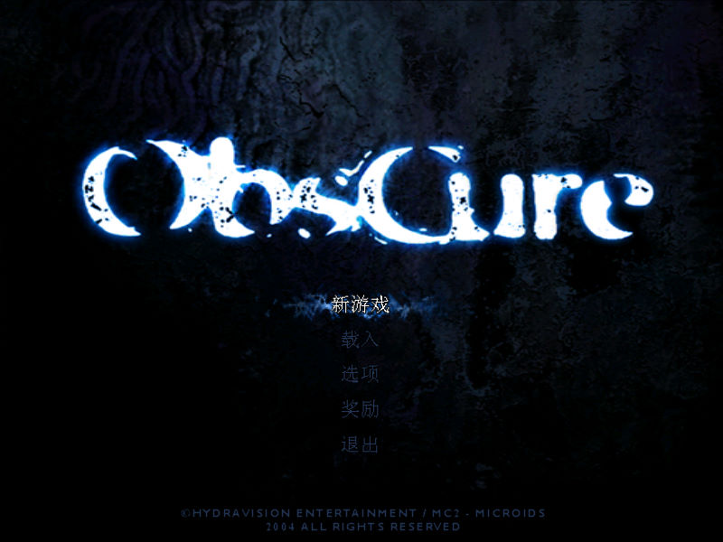
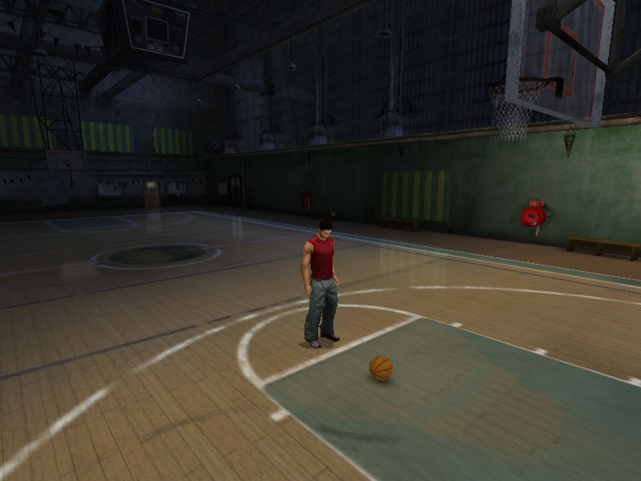

名稱：驚悚空間1／惡夜殺機1 (Obscure，簡中版)
簡介：Hydravision 2004年出品的動作冒險解謎遊戲，由MC2-Microids代理發行，2006年由
育碧簡中化並代理發行 [待補]。


保護：光碟SafeDisc 4.00
備註：因SafeDisc保護關係，簡中版只能在XP系統上執行。
備註：簡中版無法使用英文版免光碟檔，文字會顯示不出來。
檔案：minicd.rar = 最小檢驗光碟鏡像
nocd_eng.rar = 英文版免光碟檔